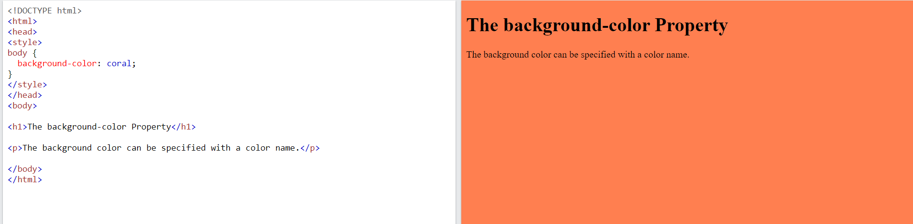
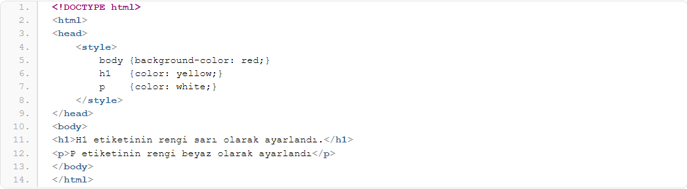
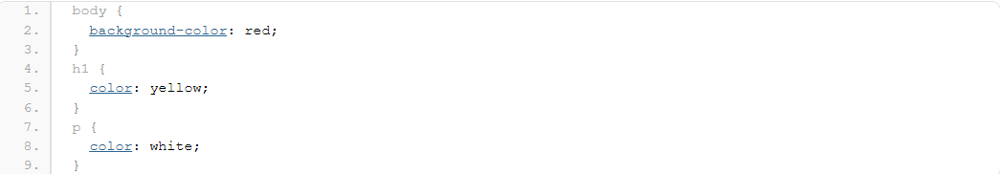

Kullandığım Kodlar
Ödev olarak ilk derslerde gördüğümüz bütün kodları kullanmaya çalıştım bunlarla ilgili pratikte yaptıktan sonra siteye yeni birşeyler katmak istedim. Tabiki de işin içine css sokmanın zamanı gelmişti fakat bu konu hakkında hiçbir bilgim yoktu. Bende biraz araştırma yapıp neler yapabilirim diye düşündüm biraz w3school birazda bazı forumlardaki yazılardan yararlanarak copy+paste yapmadan tek tek kullandığım css kodlarını inceledim ve siteye eklemeye başladım. Amacım aslında css derslerine başlamadan önce biraz bu css hakkında biraz fikrimin olmasıydı ve bu konuda da başarılı olduğumu düşünüyorum.Sizlerinde bunu yapmasını tavsiye ederim çünkü siteye yeni şeyler kattıkça bu işten daha çok zevk almaya css ile yapacaklarımı daha çok merak etmeye başladım. Şimdi örnek olarak birkaç css hakkında bilgi paylaşmak istiyorum.
-
Background-color
Background-color: bu özellik ile etiketlerine arkaplan rengi vermek için kullanılır.
-

CSS etiketlerini iki türlü sitemize ekleyebiliyoruz
Birincisi Dahili CSS;
yani html dosyamızın head kısmına bir style etiketi kullanarak arkaplanımızın hangi renk olacağını söyleyebiliyoruz. 
İkincisi ise Harici CSS;
Harici stil sayfası kullanmak için, HTML sayfasının < head > bölümüne dahil ederiz. CSS kodlarımız uzantısı .css olan ayrı bir dosyada tutulur.